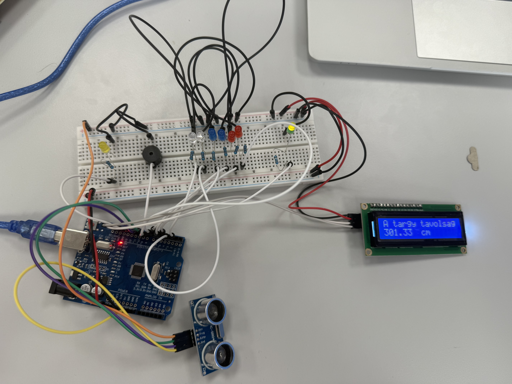
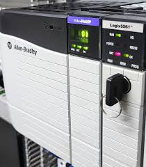

A gyár maga 1998 óta tartozik a Nestléhez, a város ipartörténeti múltja azonban sokkal korábbra nyúlik vissza. Korábban a terület almatárolónak adott helyet, de jégkrémüzem és termelőszövetkezet is volt itt. A jelenlegi büki Nestlé Purina gyár pedig négylábú kedvenceinknek, kutyáknak és macskáknak készít állateledeleket.
A gyakorlat 2025.07.21-én kezdődőtt és 2025.08.08-ig tatrott
A válaztott mikrovezérlő projectünk egy untrahangos tolatóradar volt, Arduino UNO-val.
A PLC feladat mindenkinek egységesen egy kereszteződés megoldása volt, Allen Bradley PLC-vel
A tolatóradar megoldásához egy HC-SR04 es ultrahangos érzékelőt választottunk, a távolság kiírására egy LCD kijelzőt illetve 8 LED-et és egy buzzer-t hangjelzés gyanánt. 7 LED a távolságot, míg a narancs LED a hibás adatokat jelzi

A kereszteződést egy Allen Bradley PLC segítségével vezéreljük, a lámpák egymás után váltanak, Zöld-sárga-piros-piros/sárga-zöld
